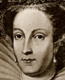
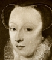
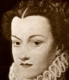

Alison Booth
1st century A. D. Plutarch. Mulierum Virtutes (Concerning the virtues of women) 1: 340-84 in Plutarch's Morals Translated from the Greek by Several Hands. Edited by William W. Goodwin. Introduction by Ralph Waldo Emerson. Rev. ed. 2 vols. New York: Athenaeum, 1870.
See How To Make It as a Woman, 117.
Search OCLC WorldCat for this title.
Search Google Books for this title.
1361-75. Boccaccio, Giovanni. De Claris Mulieribus / Concerning Famous Women. Translated by Guido A. Guarino. New Brunswick, NJ: Rutgers University Press, 1963.
TOC: Eve, Our First Mother; Semiramis, Queen of the Assyrians; Iousm Wife of Saturn; Juno, Goddesa of Kingdoms; Ceres, Goddess of Agriculture and Queen of Siciliy; Minerva, Also Known as Pallas; Venus, Queen of Cyprus; Isis, Queen and Goddess of Egypt; Europa, Queen of Crete; Libya, Queen of Libya; Martesia and Lampedo, queens of the Amazons; Thisbe, Maiden of Babylon; Hypermnestra, Queen of the Argives and Priestess of Juno; Niobe, Queen of Thebes; Hypsipyle, Queen of Lemnos; Medea, Queen of Colchis; Arachne of Colophon; Orithya and Antiope, Queens of the Amazons; Erythraea or Eriphila, the Sibyl; Medusa, Daughter of Phorcys; Iole, Queen of Aetolia; Deianira, Daughter of King Oeneus of Aetolia; Jocasta, Queen of Thebes; The Sibyl amalthea or Deiphobe; Nicostrata, Who Was Called Carmenta; Procris, Wife of Cephalus; Argia, Daughter of King Adrastus; Manto, Daughter of Tiresias; The Wives of the Minyans; Penthesilea, Queen of the Amazons; Polyxena, Daughter of King Priam; Hecuba, Queen of the Trojans; Cassandra, Daughter of King Priam of Troy; Clytaemnestra, Queen of Mycenae; Helen, Wife of Menelaus; Circe, Daughter of the Sun; Camilla, Queen of the Volscians; Penelope, Wife of Ulysses; Lavinia, Queen of Laurentum; The Tyrian Dido or Elissa, Queen of Carthage; Nicaula, Queen of Ethiopia; Pamphile, Daughter of Plates; Rhea Ilia, Vestal Virgin; Gaia Cyrilla, Wife of Traquinius Priscus; Sappho, Poetess of Lesbos; Lucretia, Wife of Collatinus; Thamyris, Queen of Scythia; The Courtesan Leaena; Athaliah, Queen of Jerusalem; Cloelia, A Roman Virgin; The Greek Woman Hippo; Medullia Dotata; Veturia; The Painter Thamyris; Artemisia, Queen of Caria; The Virgin Verginia; Irene, Daughter Cratinus; Leontium; Olympias of Macedonia; The Vestal Virgin Claudia; Verginia, Wife of Lucius Volupinus.
See How To Make It as a Woman, 2, 26, and note 18 on page 301.
Search OCLC WorldCat for this title.
Search Google Books for this title.
1372-86. Chaucer, Geoffrey. “The Legend of Good Women.” In The Works of Geoffrey Chaucer. Edited by F. N. Robinson, 480-518. 2d ed. Boston: Houghton Mifflin, 1961.
TOC: The Legend of Cleopatra; The Legend of Thisbe; The Legend of Dido; The Legend of Hypsipyle and Medea; The Legend of Lucretia; The Legend of Ariadne; The Legend of Philomela; The Legend of Phyllis; The Legend of Hypermnestra.
Search OCLC WorldCat for this title.
Search Google Books for this title.
1405. Pizan, Christine de. The Book of the City of Ladies [Le Livre de la cité des dames]. Translated by Earl Jeffrey Richards. New York: Persea, 1982.
See How To Make It as a Woman, 1-2, 5, 14-15, 26, 109 etc., and notes on pp. 283-5, etc.
Search OCLC WorldCat for this title.
Search Google Books for this title.
1443-47. Bokenham, Osbern. A Legend of Holy Women [Legendys of Hooly Wummen]. South Bend, IN: University of Notre Dame Press, 1992.
Search OCLC WorldCat for this title.
Search Google Books for this title.
1521. [Ravisius Textor, Joannes]. De Memorabilibus et claris mulieribus aliquot diversorum scriptorum opera. Paris.
TOC: De claris mulieribus / Jacobus Philippus Bergomensis – Divae Catherinae vita / Joannem Pinum – De gestis loannae virginis Franc[ae] / Valieriandi Varanii.
Among authors, Plutarch or "Plutarchus Chaeronensis" is listed, and "Jean de Pins," "Valerandus Varanius." A compilation that includes a life of Saint Catherine (?) and of Joanna Virgin of France, i.e. Joan of Arc (?). Rare undigitized book.
Search OCLC WorldCat for this title.
Search Google Books for this title.
ca. 1610-15. The Lives of Women Saints of Our Contrie England, Also some other lives of holie women written by some of the auncient fathers. Early English Text Society. London: Trubner, 1886.
Search OCLC WorldCat for this title.
Search Google Books for this title.
1624. Heywood, Thomas. Gynaikeion: or, Nine Bookes of Various History Concerninge Women: inscribed by ye names of ye nine muses. London: Adam Islip.
See How To Make It as a Woman, 26-27, and note 106 on page 293.
British Library.
Also published anonymously: The Nine Muses , 1700. "Index or Table" outlines "Nine Bookes" of feminine types of different portions of fact and myth, including Nemesis, Fortune, Ceres, Minerva, Sybils, Semiramis, Cleopatra, and Queen Elizabeth, the latter addressed thus: "that as you are the last of these in this my Catalogue by order, posterity may reckon you the first amongst the Illustrious by merit" (125). Heywood addresses the reader: "setting so many statues of honour before your eyes . . . . everie of you [may] fashion her selfe as complete a woman for vertue, as Apelles made up the purtraiture of his godesse, for beautie" (118-19).
TOC: TOC : Clio; Euterpe; Thalia; Melpomene; Terpsichore; Erato; Polihymnia or Memorie; Urania; Calliope.
Search OCLC WorldCat for this title.
Search Google Books for this title.
1639. Rivers, George. The Heroinae; or, The Lives of Arria, Paulina, Lucretia, Dido, Theutilla, Cypriana, Aretaphila. London: Printed by R. Bishop, for John Colby.
Search OCLC WorldCat for this title.
Search Google Books for this title.
1640. Heywood, Thomas. The Exemplary Lives and Memorable Acts of Nine of the Most Worthy Women of the World: Three Iewes, Three Gentiles, Three Christians. London: Printed by Thomas Cotes, for Richard Royston.
See How To Make It as a Woman, 26-27.
TOC: Deborah; Judith; Esther; Bunduca [various spellings of Boadicea]; Penthisilaea; Artemisia; Elpheda; Queen Margaret (wife of Henry VI); Queen Elizabeth.
British Library. See Robert Burton [i.e. Nathaniel Crouch], who continues the format of nine types after 1688. Perhaps modeled on Richard Johnson, The Nine Worthies of London (1592). See Burton, The History of the Nine Worthies of the World (1687).
Search OCLC WorldCat for this title.
Search Google Books for this title.
1642. Scudéry, Madeleine de. Les Femmes illustres ou les Harangues heroïques. English ed: The Female Orators; or, The Courage and Constancy of Divers Famous Queens, and Illustrious Women, Set Forth in Their Eloquent Orations, and Noble Resolutions: Worthy the Perusal and Imitation of the Female Sex. English'd from the French edition of Monsieur de Scudéry. London: T. Tebb, 1714.
See How To Make It as a Woman, 26
TOC: Artemisa to Socrates; Mariamne to Herod; Cleopatra to Mark-Anthony; Sisigambes to Alexander; Sophonisba to Masssinissa; Zenobia to her Daughters; Porcia to Volumnius; Berenice to Titus; Panthea to Cyrus; Amalasontha to Themodates; Lucretia to Collatinus; Vuumnia to Virginia; Athenais to Theodosius; Pulcheria to the Patriarch of Constantinople; Calphurnia to Lepidus; Livia to Mecenas; Cloelia to Porsenna; Octavia to Augustus; Agrippina to the Roman People; Sappho to Erynna.
Search OCLC WorldCat for this title.
Search Google Books for this title.
1647. Le Moyne, Le Pere. Galerie de Femmes Fortes. English ed.: The Gallery of Heroick Women. Translated by Marquesse of Winchester [John Paulet]. London: by R. Norton for Henry Seile, 1652.
TOC: Debora; Jahel; Judith; Salomona; Mariamne; Camme; Artemisia; Monime; Zenobie; Lucrece; Lucrecia; Clelie; Porcie; Arria; Paulina; The French Judith; Isabelle; The Maid of Orleans; The Victorious Captive; Mary Stewart; The Gallant Jews; The Gallant Barbarian Women; The Gallant Roman Women; The Gallant Christian Women.
Search OCLC WorldCat for this title.
Search Google Books for this title.
1651. Gerbier, Charles. Elogium Heroinum, the Ladies Vindication; or, The Praise of Worthy Women. London: Printed by T.M. & A.C. and sold by William Raybould.
Search OCLC WorldCat for this title.
Search Google Books for this title.
1657. Gent, J. H. [Thomas Heywood]. The Generall History of Women, Containing the Lives of the Most Holy and Profane.... London: Printed by W. H. for W. H..
See How To Make It as a Woman, 26, 27.
TOC: The First Book: Clio; the Goddesses Coelestiall; The Goddesses Terrestriall; The Marine Goddesses; The Goddesses Infernal; An abstract of all the Fables in the fifteen books of Ovid’s Metamorphosis. The Second Book Inscribed by Euterpe: The Muses; The Sybils; The Virgins Vestals; The Prophetesses; The Hesperides; Pleides or Hyades; The Graces; Horae, or the Houres; Aurora, or the Morning; Nox, or the Night. The Third Book of Women, Inscribed by Thalia: Of Queens Illustrious; A Funeral Ode Upon the Death of Anna Panareta; Of Diverse Ladies Famous for Their Modesty; The Wife of Fulvius; Actaphila; The Wife of Nausimenes; Cyane and Medullina; Erixo; A Woman of the City Pergamus; Stratonica; Valeria and Cloelia; Olympias; Troades; The Phocides; The Women of Chios; Perisides; Celtae; Melitae; Tyrrhenae; Examples of Modesty and Magnamity; Dido; Cesara; Gumilda; Ethelburga; Polycrita; Of Queens and Other Ladies for Diverse Virtues Memorable; Of Women Remarkable for Their Love to Their Husbands. The Fourth Book, Inscribed by Melpomene: Of Women Incestuous: Semiramis; Pasiphae; Canace; Canusia; Valeria Tusculana; Julia, the Empresse; The Sisters of Cambyses; Of Livia Horestilla; Lollia Paulina; Cesonia; Jocasta; Crithaeis; Cyborea, the Mother of Judas Iscariot; Of Adulteresses: Of Many Great Ladies Branded with Adultery Amongst the Romans; An Egyptian Lady; Laodice; Phaedima; Begum, Queen of Persia; Olimpias; Elfritha; Gunnora; Of the Mistresse of Brennus; Tarpeia; Acco a Roman Matron; Of Women that Have Died in Child-Birtth; Of Women that Suffered Martyrdome; Arisoclaea. The Fifth Book, Inscribed by Terpischore; The Amazons; Warlike Women, and Those of Masculine Vertue; Camilla and Others; Xantippe and Mirho; Of English Viragoes; Joan de Pucil; Faire Women; Faire Mistresse of Pisistratus; Nitetis; Bersane; The Wise of Candaules; Rowan and Estrilda; The Faire Lady of Norwich; Callirhoe, daughter to Boetis; Wife of Cabbas; Wife of Phailus; Manto; Wife of Agetus the Lacedemonian; Of Women Deformed. The Sixth Book, Inscribed by Erato: Treating of Chast Women and of Women Wantons; Of Mary the Blessed Virgin; Petronilla; Of Chast Wives; Of Penelope; Of Women Wantons; Lais; Phrine; Glicerin or Glicera; Agathoclaea; Cleophis; Callipyge; Alogunes; Cosmartidenes; Andia; Julia; Harlotta or Arlotta; Of Divers Wantons Belonging to Sundry Famous Men; Of Famous Wantons; Mistra. The Seventh Book, Inscribed by Polyhimnia or Memory: Of Pious Daughters; Of Sisters That Have Been Kind to Their Husbands; Of Matrimony or Conjugal Love; Of Contracts Before Marriage; Of Nuptial Ornaments; Pomp, Feasts, Epithalamions; Descriptio Egredients Sponsae; Egrediens Sponsus; Oblatio Munerum, or the Offering; The Epithalamium, or Nuptiall Song; Ingressus in Cubiculum, Their Entrance into Their Bed-chamber; Sacred Auguries and Nuptial Expiations; The Conjugal Love of Women Towards Their Husbands; De Laenis; De Gulosis and Vinolentis; Of Women Addicted to Gluttony and Drunkenness; Of Women Beloved of Diverse Creatures; Of Women Excellent in the Art of Painting, Weaving, etc; Of Women Contentious and Bloody; Of Women Strangely Preserved from Death and Such as Have Unwillingly Been the Death of Their Fathers; Of Clamorous Women Commonly Called Scolds; Variety of Discourse Concerning Women. The Eighth Book, Incribed by Urania; In Treating of Women Every Way Learned; Of Poetesses and Witches; Of Women Orators That Have Pleaded Their Own Causes; Of Women Studious in Divinity; Of Women Excellent in Philosophy and Other Learning; Of Poetry; Poetriae, or Women Poets; Minerva; Sappho; Of Cleobule Lindia, and Other Poetesses; Telesilla Poetria; Witches; Cyrce; Witches Transported by the Devil; Witches That Have Changed Their Own Shape or Transformed Others; Witches That Have Confessed Themselves to have Raised Tempests in a Most Serene Sky; The Ninth Book, Inscribed by Calliope; Intreating of Women in General, with the Punishments Appertaining to the Vitious, and Rewards Due to the Virtuous; Of Women Ravished; Of Handmaids, Nurses; Midwives; and Stepdames; Of Women for their Piety and Devotion Remembered in the Sacred Scriptures; The Sister of Leucippus; Of Adultery; Sisters That Have Murdered Their Brothers; Of Mothers That Have Slain Their Children or Wives Their Husbands; Of Loquacity and Excesse; Degrees of Inchastities and Their Punishments; Of Witches and the Punishment Due to Them; Tirgatao Moeotis; Comiola Tuing; The Reward Due to Fertility; Beauty and the Reward Thereof; Of Bounty, Charity, Piety, and other Virtues in Women, with Their Rewards; Looseness of Life First Converted; Cura; Reward Due to Philosophers, Orators, and Poets.
A reissue of Gynaikeion.
Search OCLC WorldCat for this title.
Search Google Books for this title.
1665. Brantôme, Pierre de Bourdeille, Seigneur de. Le Livre des dames English ed.: The Book of the Ladies; or, Lives of Illustrious Dames. Reprinted as The Book of the Ladies (Illustrious Dames): With Elucidations on Some of Those Ladies by C.A. Sainte-Beuve. Translated by Katherine Prescott Wormeley. Illustrated with Portraits from the Original. London: W. Heinemann, 1899. Boston: Hardy, Pratt, 1902. Reprint ed. George Knottesford Fortescue, Boston: Millet, 1909. Reprinted as Illustrious Dames of the Court of the Valois Kings. New York: Lamb Publishing, 1912 Adapted as Lives of Gallant Ladies: Suggestive Stories for Lovers, Paris n.p., 1935.
See Sainte-Beuve. Table of contents for c015 in database derives from a696 published in 1899.
See How To Make It as a Woman, 26.
TOC: ; Anne de Bretagne; Catherine de Medici; Marie Stuart, Queen of Scotland; Elizabeth of France, Queen of Spain; Marguerite, Queen of France and of Navarre; Mesdames, the Daughters of the Noble House of France; Madame Yoland; Madame Jeanne; Madame Anne; Madame Claude; Madame Renee; Madame Charlotte; Madame Louise; Madame Magdelaine; Madame Marguerite; Madame Elizabeth; Madame Claude; Madame Marguerite; Madame Diane; Marguerite de Valois, Queen of Navarre; Isabelle d’Autriche, Wife of Charles IX; Jeanne d’Autriche, Wife of the Infant of Portugal; Marie d’Autriche, Wife of the King of Hungary; Louise de Lorraine, Wife of Henri III; Marguerite de Lorraine, Wife of the Duc de Joyeuse; Christine of Denmark, Wife of the Duc de Lorraine; Marie d’Autriche, Wife of the Emperor Maximillan II; Blanche de Montferrat, Duchesse de Savoie; Catherine de Cleves, Wife of Henri I de Lorraine, Duc de Guise; Madame de Bourdeille.
Search OCLC WorldCat for this title.
Search Google Books for this title.
1671. Barton, William A Catalogue of Virtuous Women recorded in the Old and New Testament. London: printed by W. Goodbid for William Cooper at Pelican in Little-Britain.
Search OCLC WorldCat for this title.
Search Google Books for this title.
1686. [Shirley, John]. The Illustrious History of Women. London: J. Harris.
See How To Make It as a Woman, 27.
TOC: The PREFACE TO THE READER; To the LADIES the Authors APOLOGY; THE INTRODUCTION; Examples: Of Chast-Love; Of Chastity; Of Piety; Of Liberality; Of Humility; Of Patience; Of Steadfastness; Of Modesty; Of Temperance; Of Learning; Women skill'd in Painting; Women skill'd in Weaving; Of Courage and Conduct in War; Of Loyal Women; Argument; The GOLDEN CHARACTER Of a VIRTUOUS WOMAN In all her CAPACITIES; THE CHARACTER Of a VIRTUOUS WIFE; THE CHARACTER Of a VIRTUOUS WIDOW.
Text in Argument contents: The Introduction to the Reasons and Arguments, & Reasons and Arguments for the Capaci∣ties of the Soul of Women, & In Relation to Learning, Arts, and Sciences. & Reasons drawn from the Immortality and wonderful Operation of the Soul, more fully proving the Excellency of Woman-kind. The Happiness that accrues to Man in the possession of so great a Blessing as a Virtuous Woman. The Reasons why Mans Happiness is not compleat on Earth without the Charm∣ing Creature Woman.
-
 Catherine de Medici
Catherine de Medici -
 Marie Stuart
Marie Stuart -
Marie Stuart
-
 Elizabeth of France
Elizabeth of France -
 Marie de Medici
Marie de Medici -
Diane de France
-
Isabelle d'Autriche
-
 Louise de Lorraine
Louise de Lorraine
Search OCLC WorldCat for this title.
Search Google Books for this title.
1687. Burton, Robert. [i.e., Nathaniel Crouch] The History of the Nine Worthies of the World: three whereof were Gentiles, I. Hector, son of Priamus, King of Troy, II. Alexander the Great ..., III. Julius Cæsar ..., : three Jews, IV. Joshua ..., V. David ..., VI. Judas Maccabeus ..., : three Christians, VII. Arthur, King of Brittain, VIII. Charles the Great, Emp. of Germany, IX. Godfrey of Bulloign, King of Jerusalem : being an account of their glorious lives, worthy actions, renowned victories and deaths : illustrated with poems and the picture of each worthy London: Crouch, 1703; 1727. Other publishers: 1738; 1759; 1776.
See How To Make It as a Woman, 27.
NOT: =a male collective biography
Search OCLC WorldCat for this title.
Search Google Books for this title.
1688. Burton, Robert. [i.e. Nathaniel Crouch] Female Excellency; or, The Ladies Glory: Illustrated in the Worthy Lives and Memorable Actions of Nine Famous Women, Who Have Been Renowned Either for Virtue or Valour in Several Ages of the World. London: Nathaniel Crouch, 1688. 2d ed., London, 1704. 3d ed., London: Bettesworth & Batley, 1728. Burton, The Female Worthies; or, the Ladies['] Glory. 4th ed., Dublin: Cross, 1765.
See How To Make It as a Woman, 27.
TOC: Deborah, the Prophetess; The Valiant Judith; Queen Esther; The Virtuous Susanna; The Chast Lucretia; Voadicia, Queen of Brittain; Mariamne, wife to King Herod; Clotilda, Queen of France; Andegona, Princess of Spain.
One British Library copy, 3rd ed. 1728, includes frontispiece and poem: an angel with trumpet and book, standing on a stone resting on a rectangular block, the wings and drapery having been painted green. "A Woman often representeth Fame: I Nine present, and all of worthy Name. For Virtue or for Valour all Renown'd,/ whose glorious Fame doth through the World resound./ Whereby 'tis evident that Woman can/ Equal, if not exceed, the Deeds of Man./ Read, and then judge impartially their Cause,/ No doubt my Heroines will gain Applause." All the woodcuts in this copy have been colored--perhaps yellow (for hair and crown) and blue (for robes or armor), faded to green and light brown. 2nd copy British Library 3rd ed. incl. extra titlepage: "Illustrated/In the worthy Lives and memorable/Actions of Nine famous Women, who/ have been Renowned either for Virtue/or Valour, in several Ages of the World:/ Namely,/ I. Deborah, the Prophetess./ II. The valiant Judith./III. Queen Esther./IV. The Virtuous Susanna./V. The Chaste Lucretia./ VI. Voadica, Queen of Britain.[sic]/VII. Mariamne, Wife to K. Herod.[sic]/VIII. Clotilda, Queen of France./IX. Andegona, Princess of Spain./ The whole adorned with Poems, and the Picture of each Lady." Both copies of 3rd ed. incl. catalogue of books (1st copy: 28 books [pages missing]; 2nd copy: 35 books), in categories: History, Miscellanies, Divinity, @ 1 s. each. Overlap with Heywood Exemplary Lives = Deborah, Judith, Esther, and Voadica/Boadicea.
Search OCLC WorldCat for this title.
Search Google Books for this title.
1726. The Lives and Amours of Queens and Royal Mistresses, with some Intrigues of Popes, Extracted from the Histories of England, France, Turkey, Spain and Italy. London: n.p., 1727.
TOC: Isabel, Queen of England under King John; Fredegund, under Chilperic King of France; Roxelana, under Soliman, the Second Emperor of the Turks; Maria de Padilla, under Don Pedro King of Spain; Marozia, under Several Popes.
Search OCLC WorldCat for this title.
Search Google Books for this title.
1752. Ballard, George. Memoirs of Several Ladies of Great Britain: Who Have Been Celebrated for Their Writings or Skill in the Learned Languages, Arts and Sciences. Oxford: Printed by W. Jackson, for the author. 2d ed., London: Printed for T. Evans, 1775. Reprint edited by Ruth Perry. Detroit: Wayne State University Press, 1985.
See How To Make It as a Woman, 6, 14, 30, 55, 199, and note 112 on page 294..
TOC: Juliana, Anchoret of Norwich, Juliana Barnes, Alias Berners; Margery Kempe; Margaret Countess of Richmond and Derby; Queen Catherine; Elizabeth Lucar; Margaret Roper; Anne Askew, Alias Kyme; Queen Katherine Parr; Lady Jane Gray; Lady Elizabeth Fane; Mary Countess of Arundel; Lady Joanna Lumley; Lady Mary Howard; Queen Mary; Lady Anne, Lady Margaret, Lady Jane Seymour; Catherine Tisthem; Jane Countess of Westmorland; Elizabeth Dancy; Cecilia Heron; Margaret Clement; Mary Roper; Margaret Ascham; Mary Queen of Scotland; Blanch Parry; Lady Burleigh; Lady Bacon; Lady Russel; Katherine Killigrew; Queen Elizabeth; Elizabeth Jane Weston; Lady Arabella Seymour; Mary Countess of Pembroke; Elizabeth Countess of Lincoln; Esther Inglis; Lady Eleanor Davies; Katherine Chidley; Elizabeth Countess of Bridgwater; Katherine Philips; Anne Wharton; Margaret Dutchess of Newcastle; Anne Countess of Pempbroke; Anne Killigrew; Elizabeth Walker; Anne Baynard; Elizabeth Legge; Lady Gethin; Lady Halket; Lady Masham; Susanna Hopton; Elizabeth Burnet; Lady Chudleigh; Honourable Mrs. Dudleya North; Elizabeth Bland; Honourable Mrs. Monk; Elizabeth Bury; Anne Countess of Winchelsea; Lady Norton; Catherine Bovey; Mary Astell; Constantia Grierson.
Search OCLC WorldCat for this title.
Search Google Books for this title.
1752. Serviez, Jacques Roergas de. The Roman empresses; or, the history of the lives and secret intrigues of the wives of the twelve Cæsars . . . Translated by Bysse Molesworth. Dublin: George Faulkner. Title variant: The Roman empresses; or, the history of the lives and secret intrigues of the wives of the twelve Caesars; of those of the other Roman emperors, and of the princesses of their blood. In which are introduced the most remarkable transactions of the roman history: collected from ancient authors Greek and Latin. With historical and critical notes. London: R. Dodsley.
TOC: Calpurnia, Wife of Julius Caesar; Livia, Wife of Augustus; Julia, Wife of Tiberius; Livia Orestilla, Wife of Caligula; Lollia Paulina, Wife of Caligula; and Cesonia, Wife of Caligula; Valeria Messalina, Wife of Claudius; Valeria Messalina, Wife of Claudius; Agrippina, Second Wife of Cluadius; Octavia, Wife of Nero; Poppea, Second Wife of Nero; Messalina, Third Wife of Nero.
See 1899 and early twentieth-century editions (item 714).
Search OCLC WorldCat for this title.
Search Google Books for this title.
1755. Amory, Thomas. Memoirs: Containing the Lives of Several Ladies of Great Britain. A History of Antiquities, Productions of Nature, and Monuments of Art. [etc.] London: John Noon.
A generic grab-bag, possibly identical to the following. The title echoes Ballard's first edition three years earlier.
Search OCLC WorldCat for this title.
Search Google Books for this title.
1755. Amory, Thomas. Memoirs of Several Ladies of Great Britain. Interspersed with Literary Reflexions, and Accounts of Curious Things.
TOC: Borrows from Ballard. Other titles: The Female Worthies and Memoirs of Eminent Ladies. TOC: The Life of Mrs. Benlow; The Life of Mrs Cheslyn; The Life of Mrs. Fanshaw; The Life of Mrs. Chadley; The Life of Mrs. Biffel; The Life of Mrs. Durell; The Life of Mrs. St. John; The Life of Mrs. Coke; The Life of MRs. Cawlety; The Life of Mrs. Mort; The Life of Mrs. Denham; The Life of Mrs. Grahem; The Life of Mrs. Lowman; The Life of Mrs. Munkley; The Life of Mrs. Reynolds; The Life of Mrs. Worsley; The Life of Mrs. Wallis; The Life of Mrs. Hellier; The Life of the Beautiful Isyphena; The Life of Judith, The Charming Hebrew.
Search OCLC WorldCat for this title.
Search Google Books for this title.
1766. Biographium faemineum: The Female Worthies; or, Memoirs of the Most Illustrious Ladies, of All Ages and Nations, who Have Been Eminently Distinguished for Their Magnanimity, Learning, Genius, Virtue, Piety, and Other Excellent Endowments...Containing (Exclusive of Foreigners) the Lives of above Fourscore British Ladies...Collected from History, and the Most Approved Biographers, and Brought Down to the Present Time... 2 vols. London: Printed for S. Crowder, and J. Payne.
TOC: Vol. 1: Acme, A Jewess; Adroacomia, Cornelia, a Nun and Poetess; Andreini, Isabela, A Celebrated Comedian; Anne, Daughter of Charles I of England; Anne, Princess of Orange; Joan of Arc, The French Heroine; Arete, A Teacher of Philosophy; Arria, a Roman Lady; Artemisia, Queen of Caria; Countess of Arundel; Margaret Ascham; Anne Askew; Mary Astell, an Ingenius Writer; Athenais, Married to the Emperor Theodosius; Lady Anna Bacon, Governess to Edward VI; Juliana Barnes, A Prioress; Elizabeth Barton, The Holy Maid of Kent; Anne Bayard; Margaret Beaufort; Afra Behn; Charatine Bernard; Catherine Bovey; Antoinette Vourignon; Countess of Bridwater; Anne Broadstreet, A Poetess of New England; Martha Broffier; Elizabeth Burnet; Mildred Burleigh; Elizabeth Bury, Versed in all the Sciences; Calphurnia, Pliny’s Wife; Carolina, Wilhelma, Dorothe; Blanche Castille, Queen of France; Queen Catherine, Queen of Henry VIII; Saint Catherine; Catherine de Medicis, Queen of France; Catherine, Czarina, consort to Czar Peter; Susannah Centlivre; Mary Chandler; Charixena, A Learned Grecian Lady; Chelonis, daughter of Leonidas K; Katherine Chidleigh; Christina, Queen of Sweden; Lady Mary Chudleigh; Rufina Claudia, A British Lady, Celebrated by Martial; Margaret Clement; Clea; Cleobule; Cleopatra; Catherine Cockburn; Anna Comnena, daughter of the Emperor Comnenus; Helena Lucretia Cornaro; Corinna, a Theban Poetess; Cornelia, mother of the Gracchi; Lady Cuttus; Anne Dacier; Damphila, an Associate of Sappho; Lady Eleanor Davies; Diotyma, Instructed by Socrates; Mary Eagle; Elfeda, Daughter of Alfred the Great; Queen Elizabeth; Emma, Mother of St. Edward the Confessor; Erinna, a Poetess of Teos; Anne, Dutchess of Estampes; Eurydice, Wife of Aridaeus K. of Macedeon; Lady Elizabeth Fane; Fannia, A Roman Lady; Fannia, Famous for her Greatness of Soul; Cassandra Fedele, a Venetian Lady; Renata, Dutchess of Ferrara; Francisca, a Famous Devotee; Fulvia, Wife of Marc Antony; Eleanora Galligai; Garnache, Frances de Rohan, a Princess of France; Lady Grace Gethia; Godiva, Wife of the Duke of Mercia; Lucretia Gonzaga, an Italian Lady; Isabella Gonzaga; Julia Gonzaga; Mary de Jars Gournay; Lady Jane Gray; Constantia Grierson, an Irish Lady; Gualdara, a Florentine Lady; Johanna Maria Bouviers de la Mothe Guyon, a French Lady; Vol. 2: Anna Halket; Harriot Eusebia Harcourt; Lady Elizabeth Hastings; Flavia Helena, daughter of Coil, King of Britain; Heloisa, Wife of Abelard; Helpes, a Sicilian Lady; Cecilia Heron, Daughter of Sir Thomas More; Hildegurdis, an Abbes; Hipparchia, Wife of Crates the Philosopher; Hippo, Daughter of Chiro the Centaur; Susanna Hopton; Hortentia, Daughter of Hortensius the Orator; Antoinette Houlieres de le Garde; Lady Mary Howard, Wife of Thomas Duke of Norfolk; Hypatia, a Teacher of Philosophy; Jane, Countess of Westmoreland; Mary Catharine des Jardin; Esther Inglis, famous for Fine Writing; Juliana, Anchoret of Norwich; Margery Kempe; Katharine Killigrew; Anne Killigrew; Margaret Lambrun; Elizabeth Legge; Elizabeth Lincoln; Mary Bruneau Logis, a French Lady; Jaquiline de Longvic, Dutchess of Montpensier; Elizabeth Lucar; Lucretia, a Roman Lady; Joanna Lumley, Wife of John Lord Lumley; Madam de Maintenon; Manto, An Ancient Poetess; Margaret, Countess of Richmond and Derby; Margaret, Queen of Henry VI; Mariamne, Wife of Herod the Great; Lucretia Marinella; Queen Mary, daughter of Henry VIII; Mary of Scotland; Mary, K. William’s Queen; Lady Damaris Mashain; Moeroe, a Learned Woman Among the Ancients; Lady Molesworth, Daughter of Lord Molesworth; Monimia, Wife of Mithridates; Mrs. Hon. Monk, Daughter of Lord Molesworth; Mad. de Montelspan; Olympia Fulvi Morata; Musca, a Lyric Potess; Myra, a Byzantian Elegiac Poetess; Margaret de Navarre, Queen of Valois; Jane Navarre, Queen of Albert; Margaret, Dutchess of Newcastle; Nicaule, Queen of Sheba; Nicolstrata, Mother of Evander; Hon. Mrs. Dudley North, a Daughter of Lord North and Grey; Lady Frances Norton; Octavia, Sister to Augustus Caesar; Dorothy Pakington, Wife of Sir John Pakington; Pamphila, Famous for Her Writings; Panthea, Wife of Abradates, King of Susa; Catherine Parr, Queen of Henry VIII; Blanch Parry, Maid of Honour to Queen Elizabeth; Anne de Parthenai; Catherine de Parthenay; Mary Sydney Pembroke; Anne, Countess of Pembroke; Penelope, Wife of Ulysses; Perilla, a Roman Lady; Phemonoe, Priestess of Apollo; Katherine Phillips, the Famous Orinda; Philla, One of the Most Illustrious Ladies of Antiquity; Mrs. Loetitia Pilkington of Ireland; Pompeia Plotina, Wife of the Emperor Trajan; Argentaria Polla, Wife of Lucan; Praxilla, a Sicyonian Dithyrambic Poetess; Valeria Falconia Proba; Catherine, Countess of Ranelagh; Margaret Roper, Daughter of Sir Thomas More; Mary Roper, Daughter of Thomas More; Elizabeth Rowe; Lady Elizabeth Russel; Sappho, A Famous Poetess; Anna Maria Schurman; Magdeline de Scudery; Semiramis, Queen of Assyria; Marie de Savigne; Anne Seymour; Arabella Seymour; Sophronia, a Roman Lady; Sosipatra, a Lydian Lady; Stella, Dean Swift’s Wife; Sulpicia, a Roman Lady; Sulpicia, a Celebrated Poetess; Suze, Henriette Suze, Countess of Coligni; Tanaquil, Wife of Tarquinius Priscus; Renie Taveau; Telesilla, A Noble Poetess of Argos; Theano, The Name of Three Poetesses; Corinna Thomas; Thymele, A Musical Poetess; Catherine Tishen, a Great Linguist; Catherine Trother, a Scots Lady; Tymicha, A Lacedonian Lady; Elizabeth Walker; Elizabeth Jane Weston; Anna Wharton; Countess of Winchelsea; Lady Mary Wroth.
Search OCLC WorldCat for this title.
Search Google Books for this title.
1770. Stretch, L. M. The Beauties of History; or, Pictures of Virtue and Vice, Drawn from Real Life: Designed for the Instruction and Entertainment of Youth. 2. vols. London: for author. 2d ed., Dublin: Marchbank, 1775. 3d ed., London: E. & C. Dilly, 1777. 5th ed., London, 1782; 1787; 1794; 1802; 1813; 1815; 1833. 2008.
British Library.
TOC: Conjugal Affection: The Wife of Julius Sabinus; The Wife of Cavades, King of Persia; The Wife of Phocion, General of the Athenians; The Wife of Acilius the Roman; The Young Prince of Armenia to the Princess; Pliny to his Wife Terentia; Ambition: Tullia, Who Plots the Death of Her Husband and Sister, then Marries her Brother in Law; Beneficence: Lady Burleigh; Chastity: Phocais, an Ionian Lady; Elizabeth, the Young Widow of Sir John Grey; Lucretia; The Conduct of a Lacedemonian Lady; Chiamara, the Wife of Ortiagon; Compassion: Blanche of Castile, Queen Regent of France; The Czarina; Sentiments: Jane of Flounders, Wife of Charles de Blois; Constancy: Mrs. Askew; Cruelty: Mary I of England; Education: Phronissa and Her Daughters; Gaming: Mira; Dorinda; Happiness: Monima; Industry: Lady Jane Grey; Princess Elizabeth.
Search OCLC WorldCat for this title.
Search Google Books for this title.
1772. La Roche-Guilhen, Anne, Mlle de. The History of Female Favourites: Of Mary de Cadilla...Livia...Julia Farnesa...Agnes Soreau...and Nantilda... Amsterdam: 1697; London: Printed for C. Parker.
TOC: Mary of Padilla, under Peter the Cruel; Livia, under the Emperor Augustus; Julia Farnesa, under Alexander the Sixth; Agnes Soreau, under Charles the Seventh; Nantilda, under Dagobert, King of France.
Search OCLC WorldCat for this title.
Search Google Books for this title.
1777. Gibbons, Thomas. Memoirs of Eminently Pious Women, Who Were Ornaments of Their Sex, Blessings to Their Countries and Edifying Examples to the Church and World. 2 vols. [ London: Backland ].
See Gibbons and Dana, 1803 and Jerment, 1804.
TOC: Mary of Padilla, Under Peter the Cruel, King of Castile; Livia, Under the Emperor Augustus; Julia Farnesa, Under Alexander the Sixth, Pope of Rome; Agnes Soreau, under Charles the Seventh, King of France; Nantilda, Under Dagobert, King of France.
See How To Make It as a Woman, 30, 52-53, 80, 299n15.
Search OCLC WorldCat for this title.
Search Google Books for this title.
1799. Pilkington, Mary Hopkins. Biography for Girls; or, Moral and Instructive Examples for Young Ladies. London: Vernon & Hood. Subtitle variant: or, Moral and Instructive Examples for the Female Sex. 3d ed., London, 1800. 4th ed., Philadelphia: Johnson & Warner, 1809.
TOC: Louisa Harrington, or the Victim of Pride; Emily Manley, or Gratitude Displayed; Sally Bowman, or Filial Fondness; Emma Hamilton, or Human Vicissitudes; Lucy Lutredige, or Vanity Punished; Frances Hindos, or the Amiable Orphan.
See How To Make It as a Woman, 67 and note 38 on page 301.
Search OCLC WorldCat for this title.
Search Google Books for this title.
1803. Eccentric Biography; or, Memoirs of Remarkable Female Characters, Ancient and Modern. Including Actresses, Adventurers, Authoresses, Fortune-Tellers, Gipsies, Dwarfs, Swindlers and Vagrants: Also Many Others who Have Distinguished Themselves by Their Chastity, Dissipation, Intrepidity, Learning, Abstinence, Credulity, &c., &c.: Alphabetically Arranged: Forming a Pleasing Mirror of Reflection to the Female Mind. Ornamented with Portraits of the Most Singular Characters in the Work. London: Printed by J. Cundee, sold by T. Hurst. Worcester, [MA]: Printed by Isaiah Thomas, 1804. With title variant: Eccentric Biography: Or . . . Modern. Including Princesses, Duchesses . . . Illustrated. 2d American ed., Worcester: I. Thomas, for Homans, Boston, 1805.
British Library. 1803 edition: 96 subjects, including Corday [shortened version of Hays], Astell, Behn, Centlivre, Roland, Mrs. Wollstonecraft Godwin, Joan of Arc, “Alice, an American slave who lived to be 116 (with portrait)” (Stuart Bennett, An Eighth Mill Valley Miscellany, Catalogue XXXVIII, item 197). Frontispiece of Joan; 7 other illus. “First published as part of Eccentric Biography; or, sketches of remarkable characters, ancient and modern. Here the articles relating to women have been separated and added to,” James Burmeister, English Books 1675-1900 : Catalogue 48 (4 Dec 2000), 8.
TOC: Vol. 1: Lady Jane Grey; Queen Catharine Parr; Jane, Queen of Navarre; Lady Mary Vere; Countess of Suffolk; Lady Mary Armyne; Lady Elizabeth Langham; Countess of Warwick; Lady Elizabeth Brooke; Mrs. Margaret Andrews; Lady Alice Lucy; Lady Margaret Houghton; Mrs. Ann Baynard; Lady Frances Hobart; The Right Hon. Lady Cutts; The Right Hon. Lady Elizabeth Hastings; Mrs. Jane Ratcliffe; Lady Rachel Russell; Mrs. Elizabeth Burnet; Mrs. Elizabeth Bury; Mrs. Elizabeth Rowe.
Search OCLC WorldCat for this title.
Search Google Books for this title.
1803. Gibbons, Thomas, and Daniel Dana. Memoirs of Eminently Pious Women: Who Were Ornaments to Their Sex, Blessings to Their Families, and Edifying Examples to the Church and World. Abridged from the Large Work of Dr. Gibbons, London by Daniel Dana. Newburyport, [MA]: Printed for the Subscribers by Angier March.
See How To Make It as a Woman, 30, 52-53 and note 15 on page 299.
See Gibbons, 1777 and Burder, Gibbons, and Jerment, 1815.
Search OCLC WorldCat for this title.
Search Google Books for this title.
1803. Hays, Mary. Female Biography; or, Memoirs of Illustrious and Celebrated Women, of All Ages and Countries, Alphabetically Arranged. 6 vols. London: R. Phillips. 1st American ed., 3 vols., Philadelphia: Birch & Small; Fry & Kammerer, 1807.
TOC: Boadicea; Anne Boleyn; Madame Bontems; Catherine Bovey; Clemence de Bourges; Antoinette Bourignon; Countess de Bregy; Lady Burleigh; Elizabeth Burnet; Elizabeth Bury; Calpurnia; Bianca Capello; Carolina Wilhelmina Dorothea; Catherine of Aragon; Catherine of Medicis; Catherine I; Catherine II.
See How To Make It as a Woman, 32, 67.
British Library.
Search OCLC WorldCat for this title.
Search Google Books for this title.
1803. [Stewarton]. The Female Revolutionary Plutarch: Containing Biographical, Historical, and Revolutionary Sketches, Characters, and Anecdotes/by the Author of “The Revolutionary Plutarch” and “Memoirs of Talleyrand.” 3 vols. London: Printed by J. Harding for J. Murray, 1806. 3d ed., London: Murray, 1808.
TOC: Vol. 2: Marie Antoinette; Josephe Jeanne; Queen of France and Navarre; The Queen of Spain; The Queen of Prussia; The Queen Dowager of Etruria; Madame Necker; Aimee C. Renaud, the Parisian Victim; Sophia and Henrietta de St. Marie, revolutionary Suicides; Madame le Grand, the Loyal Grenadier; Madame Momoro, the Goddess of Reaso and Revolutionary Religions; Madame Tallien; Fraternal and Sisterly Banquets; Susan Sorel, the Female Atheist; Felicite Chaussee, the Generous Informer; Louisa la Ray, the Female Colonel; Louisa Carbinot, the Lyonese Daughter; The Countess de Sauvignac and Her Daughters, Vendean Victims; Adelaide Langenois, the Female Captain of Dragoons; French Revolutionary Boarding-Schools; The Countess de Villelume, the Filial Heroine; The Lunatic Maria Antoinette; Madame Lavergne, the Connubial Heroine.
1808 dedication: "These volumes/ are inscribed/to the revered memory/of/ Marie Antoinette Josephe Jeanne,/ Archduchess of Austria,/ Queen of France and Navarre;/Daughter, Sister, and Aunt/ of/ Emperors and Kings;/A/ Lamented Victim/ of the Inhospitable Rage/and/ Ferocious Character/ of/ Revolutionary Frenchmen./ Legitimate Sovereigns,/ and/ Loyal Subjects,/ Her/ Murder/ Is Still Unrevenged!!!" Vol. I: Josephine Buonaparte, Josephine Dessalines the revolutionary Empress of Hayti, Madame Recamier, The Countess de Villeneuve de la Foret, Madame de Stael, Marianne des Hayes, Madame de Genlis, Maria Farbe, Annette La Vigne, Martha Glar, with other topical chapters. Portraits of A. C. Renaud and the Queen of Prussia, published in 1807 by Oddy, have been added at the end of vol. I without any apparent relevance to the contents.


Search OCLC WorldCat for this title.
Search Google Books for this title.
1804. Betham, Mary Matilda [1776-1852]. A Biographical Dictionary of the Celebrated Women of Every Age and Country. London: Printed for B. Crosby; Tegg and Castleman; and E. Lloyd, Betham, and Warde, Printers.
See How To Make It as a Woman, 232, and note 18 on page 334.
Aunt of Matilda Barbara Betham-Edwards, Betham is included as a subject in the latter's Six Life Studies of Famous Women (1880). Various collections list this title as A Biographical Dictionary of Celebrated Women of Every Age and Country (i.e. without "the"), and Crosby's name alone as publisher.
Search OCLC WorldCat for this title.
Search Google Books for this title.
1804. Jerment, Rev. George, ed. Memoirs of Eminently Pious Women, Who Were Ornaments of Their Sex, Blessings to Their Countries and Edifying Examples to the Church and World by Thomas Gibbons. Revised ed. 2 vols. London: Ogle.
See How To Make It as a Woman, 52-53.
TOC: vol. I (22 subjects): Lady Jane Grey; Catharine Parr; Jane, Queen of Navarre; Queen Mary; Countess of Suffolk; Lady Mary Armyne; Lady Elizabeth Langham; Countess of Warwick; Lady Elizabeth Brooke; Mrs. Margaret Andrews; Lady Alice Lucy; Lady Margaret Houghton; Mrs. Ann Baynard; Lady Frances Hobart; the Right Hon. the Lady Cutts; the Right Hon. the Lady Elizabeth Hastings; Mrs. Jane Ratcliffe; Mrs. Catherine Breterg; Lady Rachel Russell; Mrs. Elizabeth Burnet; Mrs. Elizabeth Bury; Mrs. Elizabeth Rowe. vol. II (26 subjects): Mrs. Joan Drake; Lady Falkland; Lady Halket; Mrs. Rebecca Combe; Mrs. Gertrude Clarkson; Mrs. Mary Terry; Elizabeth West; Mrs. Ann Dutton; Mrs. Housman; Mrs. Hannah Woodd [sic]; Miss Gray; Miss Sarah Manwaring; Mrs. Margert Magdelene Althens; Lady Henrietta Hope; Lady Glenorchy; Lady Huntingdon; Mrs. Talbot; Mrs. Campbell; Lady Burford; Mrs. Isabella Brander; Mrs. Middleton; Miss Henrietta Neale; Mrs. Walker; Mrs. Humphreys; Mrs. Hutchinson; Mrs. Grace Bennet.
Second volume by Rev. George Jerment. Preface by George Jerment dated Weston Place, May 23, 1804: "among the British writers on this subject, the late Dr. Gibbons holds the most eminent place. His two volumes are here compressed into one, the less important or extraneous matter in his collection being omitted. Some, though very few, of the lives in his volumes are, for the same reason, entirely left out" (ital in orig; x). Jerment used "various sources" for second volume, and only wrote a few himself. Whereas Gibbons's original 2-vol. work included only subjects who were English and "in high life," Jerment's second volume includes "NINE Scots women, of various ranks, who were remarkably pious" (x-xi). 2 pp. catalogue at end: Ogle in London, Glasgow; Ogle and Aikin, Edinburgh, mostly sermons.
See Gibbons (1777), Gibbons and Dana (1803), and Burder, Gibbons, and Jerment (1815).
Search OCLC WorldCat for this title.
Search Google Books for this title.
1804. Pilkington, Mary Hopkins. Memoirs of Celebrated Female Characters Who Have Distinguished Themselves By Their Talents and Virtues in Every Age and Nation: Containing the Most Extensive Collection of Illustrious Examples of Excellence Ever Published. In which the Virtuous and the Vicious are Painted in Their True Colours. Embellished with Portraits. [London]: Albion.
Search OCLC WorldCat for this title.
Search Google Books for this title.
1807. Fraser, Donald, comp. The Mental Flower Garden; or, an Instructive and Entertaining Companion for the Fair Sex. In Two Parts. Containing: 1. A Variety of Entertaining and Moral Dialogues, Partly Original, Calculated for Misses from Eight to Twelve Years. A Collection of Useful Rules Relative to Genteel Behaviour, and a Polite Address. Poetic Pieces. Devotional Poems, Writing Pieces, &c.. 2. Miscellaneous Essays, Worthy the Perusal of Women, at any Period of Life. To Which Are Added, Interesting Sketches of Female Biography... Danbury, CT: Douglas & Nichols, 1800. New York: Southwick & Hardcast, 1807.
See How To Make It as a Woman, 64.
NOT:=advice, miscellany
Search OCLC WorldCat for this title.
Search Google Books for this title.
1807. Pilkington, Mary Hopkins. Memoirs of Celebrated Women of England: Including Also Those Who Have Distinguished Themselves by Their Talents and Virtues in Every Age and Nation: Containing the Most Extensive Collection of Illustrious Examples of Feminine Excellence Ever Published : In Which the Virtuous and the Vicious Are Painted in Their True Colours. London: Albion.
See How To Make It as a Woman, 67.
Search OCLC WorldCat for this title.
Search Google Books for this title.
1810. Aikin, Lucy. Epistles on Women, Exemplifying Their Character and Condition in Various Ages and Nations. With miscellaneous poems. Boston: Wells & Wait.
Although none of the works by Aikin is strictly a female multibiography, Aikin was a model for later women writing biographical histories.
Search OCLC WorldCat for this title.
Search Google Books for this title.
1815. Burder, Samuel, Thomas Gibbons, and George Jerment. Memoirs of Eminently Pious Women of the British Empire. New ed., embellished with eighteen portraits, corr. and enl. by the Rev. Samuel Burder. 3 vols. in 1. London: Ogles. Philadelphia: J. J. Woodward, 1834; 1835; 1836.
See How To Make It as a Woman, 30.
“What is now comprised in the 1st vol. was compiled by Dr. Gibbons, and published in 1777, in two vol., and republished in 1804, with some . . . omissions. The 2nd vol. . . . was compiled by the Rev. George Jerment, and published with the former, as an additional vol. . . . Memoirs [which] form the 3rd vol. . . . appear under the . . . present ed. for the 1st time, in a collected form” (Preface, viii). See Sharp, 1822, Bacon, 1833, and Burder, 1835.

Search OCLC WorldCat for this title.
Search Google Books for this title.
1817. Cox, Francis Augustus. Female Scripture Biography: Including an Essay on what Christianity Has Done for Women. 2 vols., New York: James Eastburn. Boston: Lincoln & Edmands, 1831. 2d ed., London: John Snow, 1852.
See How To Make It as a Woman, note 121 on page 295.
Bodleian
Search OCLC WorldCat for this title.
Search Google Books for this title.
1818. Aikin, Lucy. Memoirs of the Court of Queen Elizabeth. London: Longman, Hurst, Rees, Orme, & Brown. 2 vols., 1819; 1821; 1826.
Search OCLC WorldCat for this title.
Search Google Books for this title.
1821. Hays, Mary. Memoirs of Queens: Illustrious and Celebrated. London: Allman.
See How To Make It as a Woman, 19, and note 126 on page 295.
Search OCLC WorldCat for this title.
Search Google Books for this title.
1821. [Roberts, Mary.] Select Female Biography: Comprising Memoirs of Eminent British Ladies, Derived from Original and Other Authentic Sources. London: Arch. 2d ed., London: Harvey & Darton, 1829.
TOC: Miss Margaret Andrews; Mrs. Anne Askew; Lady Elizabeth Brookes; Mrs. Elizabeth Carter; Lady Catharine Courtin; Lady Catharine Cutts; Lady Jane Grey; Mrs. Graham; Miss Elizabeth Hamilton; Lady Elizabeth Hastings; Miss Catharine Hurdis; Mrs. Lucy Hutchinson; Lady Lucy Langham; Mary, Queen of William III; Princess Charlotte of Wales; Mrs. Elizabeth Rose; Lady Rachel Russell; Susannah Countess of Suffolkl Miss Caroline Symonds; Miss Elizabeth Smith; Miss Catharine Talbot; Countess of Warwick; Miss Maria Warwick; Mrs. Warwick.
See How To Make It as a Woman, note 126 on page 295.
British Library.
Search OCLC WorldCat for this title.
Search Google Books for this title.
1822. Aikin, Lucy. Memoirs of the Court of King James the First. Boston: Wells & Lilly.
Search OCLC WorldCat for this title.
Search Google Books for this title.
1822. Belson, Mary [afterwards Elliott]. Female Biography; or, Virtue and Talent Exemplified in the Characters of Eminent British Females. London: Darton.
A children's writer (many works with animal themes) published by Darton in the early nineteenth century.
Search OCLC WorldCat for this title.
Search Google Books for this title.
1822. Sharp, T., and John Stanford. The Heavenly Sisters; or, Biographical Sketches of the Lives of Thirty Eminently Pious Females, Partly Extracted from the Works of Gibbon, Germont, and Others, and Partly Original: Designed for the Use of Females in General, and Particularly Recommended for the Use of Ladies' Schools. To which is Added, a Memoir of Mrs. Abigail, Wife of the Late President Adams, and a Sketch of the Active Life of Mrs. Sarah Hoffman. New Haven, CT: N. Whiting.
TOC: Lady Jane Grey; Queen of Navarre; Lady Vere; Lady Langham; Countess of Warwick; Catherine Bretterg; Lady Brooke; Mrs. Schurman; Princess Elizabeth of the Rhine; Lady R. Russell; Mrs. J. Ratcliffe; Mrs. Ann Baynard; Queen Mary, consort of William III; Lady Hastings; Mrs. Rowe; Mrs. Darracott; Mrs. Talbot; Countess of Huntington; Mrs. Hannah Woodd; Lady Glenorchy; Lady Hope; Lady Erskine; Mrs. Legare; Mrs. Hahn; Mrs. Dutton; Mrs. Hamilton; Lady Burford; Mrs. Brander; Mrs. H. Newell; Mrs. Abigail Adams; Mrs. Sarah Hoffman; Katherine Philips; Frances Boothby; Margaret, Dutchess of Newcastle; Anne Killegrew; Anne, Marchioness of Wharton; Anne Taylor; Aphra Behn; Alicia D’Anvers; Mary Pix; Lady Chudleigh; The Hon. Mary Monk; Anne, Countess of Winchelsea; Esther Vanhomrigh; Lady Rachel Russell; Susanna Centlivre; De la Riviere Manly; Elizabeth Thomas; Constantia Grierson; Mary Barber; Elizabeth Rowe; Jane Brereton; Mary Chandler; Mary Leapor; Catherine Cockburn; Letitia Pilkington; Elizabeth Tollet; Eliza Haywood; Lady Henrietta Luxborough; Henrietta Pennington; Mary Masters; Henrietta Madan; Lady Mary Wortley Mantagu; Frances Sheridan; Countess Anna Temple; Mary Jones; Frances Brooke; Lady Henrietta Oneil; Mary Robinson; Hesther Chapone; Georgina, Dutchess of Devonshire; Elizabeth Carter; Ann Yearsley; Charlotte Smith; Elizabeth Trefusis; Hannah Cowley; Anna Seward; M. Tighe; Mary Brunton; Anne Hunter; Hester Lynch Piozzi; Ann Radcliffe; Anna Letitia Barbauld; Eleanor Anne Franklin; Lady Anne Barnard; Jane Elliott; Hannah More; Helen Maria Williams; Joanna Baillie; Amelia Opie; Anne Grant; Mary Russell Mitford; Felicia Hemans; L. E. Landon; The Hon. Gretrude Thimelby.
Search OCLC WorldCat for this title.
Search Google Books for this title.
1825. Dyce, Alexander. Specimens of British poetesses; selected and chronologically arranged.
Search OCLC WorldCat for this title.
Search Google Books for this title.
1825. Taft, Zachariah. Biographical Sketches of the Lives and Public Ministry of Various Holy Women: Whose Eminent Usefulness and Successful Labours in the Church of Christ Have Entitled Them to Be Enrolled among the Great Benefactors of Mankind: In which Are Included Several Letters from the Rev. J. Wesley Never before Published. 2 vols. London: Kershaw. Leeds: 1825; 1828. 3 vols. in 1, London: Kershaw, 1835; 1838.
Search OCLC WorldCat for this title.
Search Google Books for this title.
1826-27. Prudhomme, Louis Marie. Repertoire universel, historique, biographique des femmes célèbres, mortes ou vivantes. Paris. Title variant: mortes ou vivantes, qui se sont fait remarquer dans toutes les nations, par leurs vertus leur genie... Paris: Lebigre. 1830.
See the collections with associated titles by Clark, Clayton, Betham, Hays, James, Junot, Sainte-Beuve. Like others of the many collective biographies of women in French, this was not directly translated into English. French sources frequently replenished the English catalogues. Prudhomme co-authored Les crimes des reines de France: depuis le commencement de la monarchie jusqu'à Marie-Antoinette with Louise Félicité Guinement de Keralio Robert and Laurent-Pierre Bérenger (Paris: Au bureau des Révolutions de Paris; Lyon : Chez Prudhomme aîné, 1791).
Search OCLC WorldCat for this title.
Search Google Books for this title.
1827. Lee, Anna Maria. Memoirs of Eminent Female Writers, of All Ages and Countries. Philadelphia: J. Grigg.
TOC: Maria Gateana Agnesi; Lucy Aikin; Maria Catherine Aunoy; Joanna Baillie; Anna Laetitia Barbould; Laura Maria Catherina Bassi; Ann Baynard; Countess D’Haupoult Beaufort; Juliana Berners; Mary Ann Le Page Boccage; Frances Brooke; Elizabeth Bury; Jane Louisa Henrietta Campan; Elizabeth Carter; Susannah Centlivre; Emilia de Breteuil Chastelet; Hester Chapone; Corinna; Hannah Cowley; Juana Inez Cruz; Madame D’Arblay; Ann Le Fevre Dacier; Maria du Deffand; Catharine Descartes; Maria Edgeworth; Madeleine Pioche de la Verge Fayette; Cassandra Fidelis; Sarah Fielding; Madame de Genlis; Wilhelmina Maxwell Glenorchy; Mary Godwin; Magdalen Angelica Poisson Gomez; Isabella Graham; Mrs. Grant; Jane Grey; Elizabeth Griffith; Sophia Grouchy; Jean Marie Bouviere de Guyon; Elizabeth Hamilton; Hypatia; Madame de Keralio; Mary Elizabeth de Lafite; Ann Therese Lambert; Charlotte Lennox; Catharine Macauley; Mary Wortley Montagu; Elizabeth Montagu; Hannah More; Lady Morgan; Harriet Newell; Mrs. Opie; Dorothy Pakington; Catharine Parr; Hester Lynch Piozzi; Annabella Plumptre; Mrs. Plunkett; Jane Porter; Anna Maria Porter; Ann Radcliffe; Martha Laurens Ramsay; Mary Robinson; Madame Roland; Margaret Roper; Elizabeth Rowe; Rachel Russel; Sappho; Anna Maria Schurman; Madeline de Scudery; Mary de Rabutin Sevigne; Anna Seward; Frances Sheridan; Charlotte Smith; Anne Louise Germain de Stael; Catherine Talbot; Mary Tighe; Sarah Trimmer; Priscilla Wakefield; Jane West; Helen Maria Williams.
See How To Make It as a Woman, 30.

Search OCLC WorldCat for this title.
Search Google Books for this title.
1828. Hemans, Felicia. Records of Woman: With Other Poems. Boston: Hilliard, Gray, Little & Wilkins; Edinburgh: W. Blackwood; London: T. Cadell.
TOC: Records of Women: Arabella Stuart; Bride of the Greek Isle; The Switzer’s Wife; Properzia Rossi; Gertrude: or Fidelity till Deathl Imelda; Edith; The Indian City; The Peasant Girl of the Rhone; Indian Woman’s Death-Song; Joan of Arc in Rheims; Pauline; Juana; The American Forest Girl; Costanza; Madeline; The Queen of Prussia’s Tomb; The Memorial Pillar; The Grave of a Poetess; Miscellaneous Poems: The Homes of England; The Sicilian Captive; Ivan the Czar; The Lady of the Castle; Corlan’s Prophecy; The Mourner for the Barmecides; The Spanish Chapel; The Kaiser’s Feast; Tasso and his Sister; Ulla; or the Adjuration; To Wordsworth; A Monarch’s Deathbed; To the Memory of Heber; The Adopted Child; The Birds of Passage; Invocation; Korner and his Sister; The Death-Day of Korner; A Voyager’s Dream of Land; The Landing of the Pilgrim Fathers in New England; The Effigies; The Departed; The Palm-Tree; The Child’s Last Sleep; The Sunbeam; Breathings of Spring; The Spirit’s Mysteries; An Hour of Romance; The Illuminated City; Roman Girl’s Song; The Spells of Home; The Distant Shop; The Graves of a Household; Mozart’s Requiem; The Image in Lava; Christmas Carol; A Father Reading the Bible; The Last Wish; Fairy Favours; Meeting of the Brothers; The Sisters; The Last Song of Sappho; Dirge; Mignon’s Song; The Curfew-Song of England; The Call to Battle; Night-Blowing Flowers; The Wanderer and the Night Flowers; The Swan and the Skylark; Echo Song; The Muffled Drum; Genius Singing to Love; A Song of the Rose; Music at Deathbed; Marshal Schwerin’s Grave; The Fallen Lime-Tree; The Bird at Sea; Far Away; Kenee; Lament of an Irish Women over her Son; The Music of St. Patrick; The Lonely Bird; The Ivy-Song; The Necromancer; The Dying Girl and Flowers; Dirge at Sea; The Lyre and Flower; The Meeting of the Ships; Sister! Since I met Thee Last; Pilgrim’s Song to the Evening Star; Welsh Melodies; The Harp of Wales; Druid Chorus on the Landing of the Romans; The Lirlas Horn; The Hall of Cynddylan; The Sea-Song of Gafran; The Lament of Llywarch Hen; The Green Isles of Ocean; Grufydd’s Feast; The Cambrian in America; Taliesin’s Prophecy; Prince Madoc’s Farewell; Howell Song; Caswallon’s Triumph; Owen Glyndwar’s War-Song; The Mountain Fires; Eryri Wen; Chant of the Bards; The Dying Bard’s Prophecy; The Fair Isle; The Rock of Cader Idris; Songs of the CID: The Cid’s Departure into Exile; The Cid’s Deathbed; The Cid’s Funeral Procession; The Cid’s Rising; Greek Songs: The Storms of Delphi; The Voice of Scio; The Spartan’s March; The Bowl of Liberty; The Urn and Sword; The Myrtle Bough.
NOT:=poetry
Search OCLC WorldCat for this title.
Search Google Books for this title.